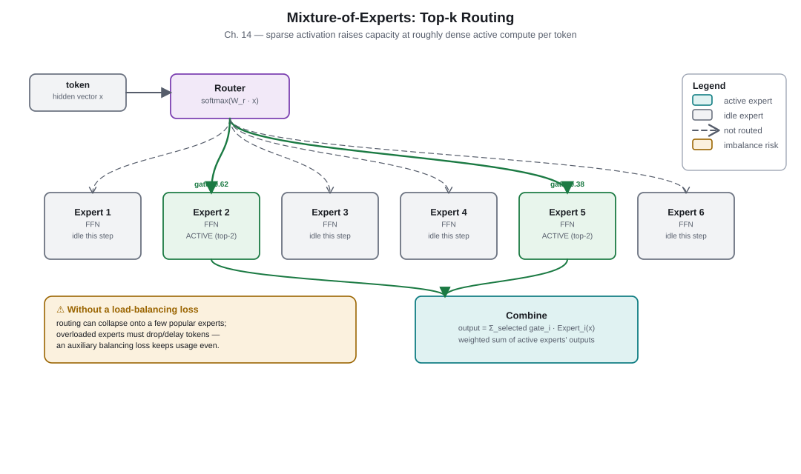
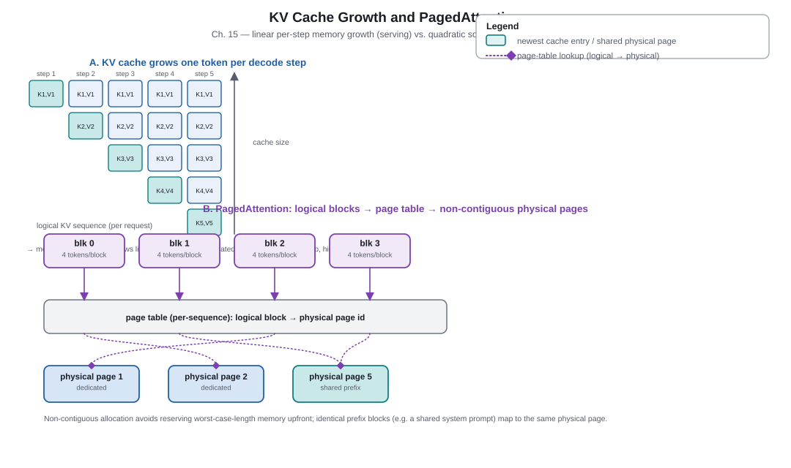
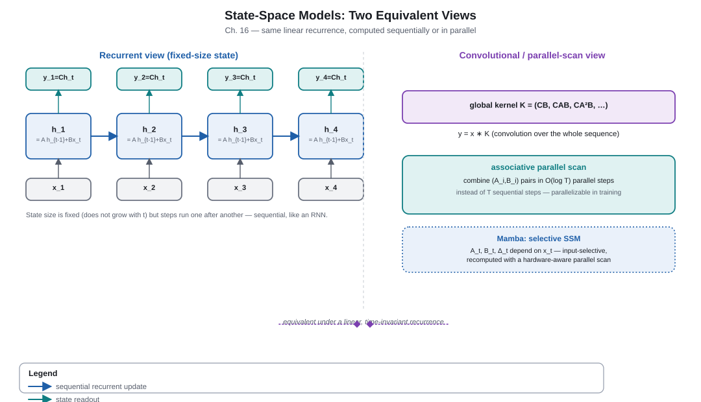

Part 4. Efficiency & Scale
Chapters 9–12 built and trained the Transformer; Chapters 13–16 ask how it survives contact with real hardware and real budgets. Every idea in this Part is a targeted answer to one question: which constraint is actually binding — compute, memory, or bandwidth — and what do we give up to relax it? Optimization tricks (Ch. 13) make a fixed-size dense model train and serve more cheaply. Mixture-of-experts (Ch. 14) decouples total capacity from per-token compute. Long-context techniques (Ch. 15) separate quadratic training cost from linear serving-cache growth. State-space models (Ch. 16) trade the Transformer's unbounded key/value cache for a fixed-size recurrent state. None of these replace the Transformer outright — they each relax one of its constraints while introducing a new one.
Chapter 13. Optimization & Training Stability
2017–2023 · Efficiency & scaleSource: LLM Architecture Evolution, pp. 32–35.
Why this mattered
The 2017 Transformer block was a proof of concept, not a finished recipe. As models grew to dozens of layers and billions of parameters, small inefficiencies compounded: LayerNorm's mean-centering and bias terms cost extra compute on every layer; plain ReLU feed-forward blocks under-performed gated alternatives; absolute position embeddings generalized poorly beyond their training length; and a full multi-head key/value cache became the single largest cost of serving a long conversation. Chapter 13 catalogs the now-conventional "modern block" ingredients — RMSNorm, SwiGLU, RoPE, GQA, AdamW, warmup/cosine schedules, and μP — each a narrow, well-motivated reallocation of one specific budget line, not a change in what the Transformer fundamentally does.
Key takeaways
- The residual stream is a gradient "highway": each sub-layer adds a small correction to an otherwise-unchanged running total, so gradients can flow across dozens of layers without vanishing.
- Pre-norm placement (normalize the sub-layer's input, not its output) keeps the residual path itself unnormalized, which is empirically more stable to train at depth than the original post-norm placement.
- RMSNorm drops LayerNorm's mean subtraction and bias term, normalizing only by root-mean-square magnitude — cheaper per layer with comparable training behavior.
- SwiGLU-style gated feed-forward blocks (a gating branch multiplied elementwise into a value branch) reliably outperform plain ReLU MLPs at matched compute, at the cost of a third weight matrix.
- RoPE rotates query/key vectors so their dot product depends on relative position, giving better length-generalization than learned absolute embeddings.
- Grouped-Query Attention (GQA) shares key/value projections across groups of query heads, shrinking the KV cache that dominates serving memory without collapsing all the way to a single shared head.
- AdamW's decoupled weight decay, warmup-then-cosine-decay learning-rate schedules, careful initialization, and μP (maximal update parametrization) keep large training runs stable and let hyperparameters tuned on a small proxy model transfer to a much larger one.
Residual highway & pre-norm
Every Transformer layer computes x ← x + f(x), where f is
attention or the feed-forward block. Because the identity term dominates, the gradient of
the output with respect to an early layer's input is approximately the product of many
near-identity Jacobians rather than many arbitrary ones — this is why residual connections
alone (independent of any normalization scheme) are the single biggest reason deep
Transformers are trainable at all. Pre-norm (x + f(Norm(x)))
normalizes only the branch feeding into f, leaving the accumulating residual
stream itself unnormalized and gradient-friendly; post-norm
(Norm(x + f(x)), the original 2017 placement) normalizes the running total
itself at every layer, which empirically needs more careful warmup to train stably at large
depth.
RMSNorm & SwiGLU
LayerNorm subtracts the mean, divides by the standard deviation, and applies a learned scale and bias. RMSNorm keeps only the scale-normalization step — dividing by the root-mean-square of the activations — and drops mean-centering and the bias term entirely:
RMSNorm(x) = x / RMS(x) · g, where RMS(x) = √(mean(x²) + ε)
This removes one reduction and one learned parameter per normalization call, at negligible cost to model quality in practice. SwiGLU replaces a plain two-matrix ReLU MLP with a three-matrix gated variant:
SwiGLU(x) = (SiLU(xW₁) ⊙ xW₂) W₃
The gate SiLU(xW₁) multiplies elementwise (⊙) into the value branch
xW₂ before the output projection W₃; the extra multiplicative
interaction is the source of the improvement, at the cost of roughly 50% more feed-forward
parameters for the same hidden width (models typically shrink the hidden width to compensate).
RoPE & positional encoding
Self-attention has no inherent sense of order — it must be told where each token sits. Rotary Position Embedding (RoPE) encodes absolute position by rotating each query and key vector's 2D sub-spaces by an angle proportional to position; because a rotation's effect on a dot product depends only on the difference in angle between the two rotated vectors, the resulting attention score depends on relative offset even though no relative term was computed explicitly. This gives better behavior on sequences longer than any seen in training than a learned absolute-position table, though it is not a free lunch — extending far beyond the trained length still requires the interpolation/scaling tricks in Chapter 15.
| Scheme | Mechanism | Extrapolation beyond training length | Extra compute | Notable adopters |
|---|---|---|---|---|
| Learned absolute | Per-position embedding table, added to token embeddings | Poor — untrained positions are undefined | None at inference | Original GPT, BERT |
| Sinusoidal absolute | Fixed sine/cosine functions of position, added to embeddings | Weak but non-degenerate | None | Vaswani et al. 2017 Transformer |
| RoPE | Rotates Q/K sub-spaces by an angle proportional to position | Moderate natively; strong with post-hoc scaling (Ch. 15) | Small, applied per attention call | LLaMA family, most current open decoder-only models |
| ALiBi | Adds a fixed distance-proportional bias directly to attention scores | Strong, but must be trained in from the start | Negligible | BLOOM and other length-extrapolation-focused models |
GQA & serving memory
At decode time, a Transformer must keep every past token's key and value vectors in memory per layer, per head — the KV cache. Multi-Head Attention (MHA) gives every query head its own key/value heads, maximizing expressivity but maximizing cache size too. Multi-Query Attention (MQA) collapses all query heads onto a single shared key/value head, minimizing cache size but also constraining what the model can represent. Grouped-Query Attention (GQA) sits between the two: query heads are split into groups, and each group shares one key/value head — a tunable trade-off between cache size and quality that most current serving-oriented models choose over either extreme.
Optimizer, schedule & μP
AdamW decouples weight decay from the gradient-based moment estimates that ordinary Adam conflates, which more reliably regularizes large models. Training almost universally uses a short linear warmup (to avoid destabilizing the randomly initialized network with a large early learning rate) followed by a cosine decay to a small final value. μP (maximal update parametrization) rescales initialization, learning rate, and layer outputs by width in a specific, derived way so that a hyperparameter sweep done cheaply on a narrow proxy model transfers directly to a much wider production model — turning hyperparameter search from a cost that scales with the final model into one that does not.
Going deeper: why pre-norm changes the gradient at initialization
With post-norm, the gradient flowing to an early layer must pass back through every
subsequent normalization operation, each of which rescales its input — at random
initialization, deep stacks of these rescalings can shrink or amplify the gradient
multiplicatively by depth. With pre-norm, the residual stream itself is never renormalized
on the backward path from the output to any earlier layer's residual addition; only the
small branch entering f passes through a norm. This is a structural argument
for why pre-norm needs less warmup and tolerates greater depth, independent of which
specific normalization function (LayerNorm or RMSNorm) is used inside f.
Checkpoint
- Why does pre-norm placement typically make very deep Transformers easier to train than
post-norm?
Reveal answer
Pre-norm leaves the accumulating residual stream itself unnormalized; the backward pass from a late layer to an early one does not have to pass through a chain of renormalizations, so gradients are less prone to the multiplicative shrink/blow-up that post-norm's repeated renormalization of the running total can cause at depth. - What specific computation does RMSNorm remove relative to LayerNorm, and why is that
removal considered safe?
Reveal answer
RMSNorm removes mean-centering (subtracting the activation mean) and the learned bias term, keeping only the root-mean-square scale normalization. It is considered safe because it empirically matches LayerNorm's training behavior in Transformer stacks while doing less per-call arithmetic. - Where does GQA sit relative to MHA and MQA, and what does it trade for that position?
Reveal answer
GQA groups query heads and shares one key/value head per group — more cache-efficient than MHA (which gives every head its own KV) and more expressive than MQA (which shares a single KV head across all query heads). It trades some of MHA's per-head representational flexibility for a smaller KV cache, without taking MQA's full quality risk. - What problem is μP specifically designed to solve?
Reveal answer
μP is designed to make hyperparameters (notably learning rate) found cheaply on a small, narrow proxy model transfer reliably to a much wider production-scale model, avoiding a full hyperparameter search at the expensive final scale.
Sources
- DeepSeek-AI, DeepSeek-V3 Technical Report (2024). arxiv.org/abs/2412.19437 — Multi-Head Latent Attention, dated to this specific report.
- Su et al., RoFormer: Enhanced Transformer with Rotary Position Embedding (2021). arxiv.org/abs/2104.09864
- Press et al., Train Short, Test Long (ALiBi) (2021). arxiv.org/abs/2108.12409
- Zhang & Sennrich, Root Mean Square Layer Normalization (2019). arxiv.org/abs/1910.07467
- Shazeer, GLU Variants Improve Transformer (2020). arxiv.org/abs/2002.05202
- Shazeer, Fast Transformer Decoding: One Write-Head is All You Need (MQA) (2019). arxiv.org/abs/1911.02150
- Ainslie et al., GQA: Training Generalized Multi-Query Transformer Models (2023). arxiv.org/abs/2305.13245
Chapter 14. Mixture-of-Experts
2021–2024 · Sparse capacitySource: LLM Architecture Evolution, pp. 35–38.
Why this mattered
A dense Transformer ties total parameter count directly to per-token compute: every token activates every parameter, every layer. Mixture-of-Experts (MoE) breaks that link by making the feed-forward computation sparse — a lightweight router sends each token to only a handful of specialist "expert" sub-networks out of many — so total model capacity can grow far faster than the compute spent on any single token. The cost is a genuinely new systems problem: keeping routing balanced across experts and efficient across hardware, which has no dense-Transformer analogue.
Key takeaways
- A router (a small linear layer plus softmax) scores each token against every expert and activates only the top-k (commonly 1 or 2).
- Total ("sparse") parameter count and active ("dense-equivalent") parameter count are different numbers; FLOPs per token track only the active count.
- Naive routing collapses onto a few popular experts; load-balancing losses (or newer auxiliary-loss-free schemes) are required to keep all experts utilized and training stable.
- Expert parallelism spreads experts across accelerators; tokens must be shuffled to their assigned expert's device via an all-to-all communication step — the dominant systems cost of MoE at scale.
- Fine-grained routed experts plus one or more always-on "shared" experts (as in DeepSeekMoE) combine specialization with a reliable baseline computation every token receives.
- Case study: DeepSeek-V3 reports 671B total parameters with only 37B active per token — a concrete, dated illustration of the capacity/compute split, not a universal ratio.
Routing & top-k experts
For each token's hidden state x, the router computes logits
x·Wᵣ over E experts, takes a softmax, and keeps only the top-k
values (zeroing the rest). Each selected expert is a small feed-forward network; their
outputs are combined weighted by the router's (renormalized) top-k probabilities.
Token-choice routing (each token independently picks its top experts, as
above) is the common default; expert-choice routing inverts the assignment —
each expert picks the tokens it wants up to a fixed capacity — which bounds per-expert load by
construction at the cost of potentially dropping some tokens or padding others.

Load balancing
Left unconstrained, gradient descent tends to route more tokens to whichever experts are already slightly better, starving the rest of training signal — a rich-get-richer collapse. The classic fix adds an auxiliary load-balancing loss that penalizes uneven routing (comparing each expert's fraction of routed tokens against its fraction of router probability mass). This works but adds a hyperparameter (the loss weight) that trades routing quality against task loss. Newer auxiliary-loss-free schemes instead adjust a per-expert routing bias directly based on recent load, removing the extra loss term from the training objective while still discouraging collapse.
Architecture innovation
- The router and sparse top-k expert-selection mechanism itself.
- Fine-grained routed-expert + shared-expert layer design (DeepSeekMoE).
Training / systems innovation
- Load-balancing auxiliary loss, or auxiliary-loss-free bias adjustment.
- All-to-all expert-parallel communication scheduling across accelerators.
- Multi-token prediction as an auxiliary training objective/head (adds parameters, but is primarily a training-signal change, not a routing change).
Expert parallelism
Because experts are large and numerous, they are typically sharded one-or-few-per-device rather than replicated. After routing decides which expert each token needs, tokens must physically move to that expert's device (an all-to-all exchange), be processed, and move back — a communication pattern with no equivalent in a dense Transformer, where every device already has every weight it needs locally. This all-to-all step, not the expert arithmetic itself, is usually the binding cost of training or serving a large MoE model across many accelerators.
| Design | Quality vs. compute trade-off | Load-balancing approach | Notable model |
|---|---|---|---|
| Dense (no routing) | Every parameter active every token — highest compute per parameter, simplest to train | Not applicable | Original GPT/LLaMA-style dense models |
| Top-1 (Switch) | Lowest active-compute overhead per added parameter; most sensitive to routing collapse | Auxiliary load-balancing loss | Switch Transformer (Fedus et al., 2021) |
| Top-2 | More stable gradient signal per token than top-1, roughly double the active feed-forward compute | Auxiliary load-balancing loss | Mixtral 8x7B (Mistral AI, 2024) |
| Fine-grained routed + shared experts | Many small specialists plus an always-on shared baseline; more total experts, smaller each | Auxiliary-loss-free bias adjustment (in DeepSeek-V3) | DeepSeekMoE / DeepSeek-V3 (Dai et al. 2024; DeepSeek-AI, 2024) |
Case study: DeepSeek-V3
Going deeper: capacity factor and token dropping
Because hardware batches work in fixed-size blocks, each expert is usually given a capacity — a maximum number of tokens it will process in a batch, set as a multiple ("capacity factor") of the batch's fair share. Tokens routed to an already-full expert are either dropped (their output falls back to a residual pass-through) or spill to a lower-priority alternate expert, depending on implementation. A capacity factor near 1.0 maximizes hardware efficiency but risks dropping more tokens under imbalance; a larger factor wastes compute on padding but drops fewer tokens. This is a pure systems/training trade-off with no analogue in a dense feed-forward layer, where every token is always fully processed.
Checkpoint
- Why can a sparse MoE model have far more total parameters than a dense model trained
with the same per-token compute budget?
Reveal answer
Because only the top-k selected experts run for any given token; FLOPs per token scale with the small active parameter count, while total capacity scales with the number of experts, most of which are idle for any single token. - What failure mode does a load-balancing loss (or auxiliary-loss-free bias adjustment)
specifically prevent?
Reveal answer
Routing collapse, where gradient descent increasingly sends tokens to a small number of already-favored experts, starving the rest of training signal and wasting the model's added capacity. - What is the dominant systems cost of running an MoE layer across multiple accelerators,
and why doesn't a dense Transformer layer have the same cost?
Reveal answer
The all-to-all communication step that physically moves each token to the device holding its assigned expert(s) and back. A dense Transformer layer has no such step because every device already holds every weight it needs for every token. - Are DeepSeek-V3's 671B/37B parameter figures a general property of MoE models?
Reveal answer
No — they describe one specific, dated model release with its own expert count, sizing, and routing configuration. The general lesson (total capacity can exceed active compute) is durable; the exact ratio is not.
Sources
- DeepSeek-AI, DeepSeek-V3 Technical Report (2024). arxiv.org/abs/2412.19437
- Fedus et al., Switch Transformers (2021). arxiv.org/abs/2101.03961
- Mistral AI, Mixtral of Experts (2024). arxiv.org/abs/2401.04088
- Dai et al., DeepSeekMoE (2024). arxiv.org/abs/2401.06066
- Wang et al., Auxiliary-Loss-Free Load Balancing (2024). arxiv.org/abs/2408.15664
- Gloeckle et al., Better & Faster Large Language Models via Multi-Token Prediction (2024). arxiv.org/abs/2404.19737
Chapter 15. Long-Context Architectures
2020–2024 · Serving & context scalingSource: LLM Architecture Evolution, pp. 38–41.
Why this mattered
Self-attention's score matrix grows quadratically with sequence length, and its key/value cache grows linearly with every generated token — two related but distinct costs that are easy to conflate. Chapter 15 separates "how do we compute attention over a long sequence efficiently" (FlashAttention, sparse and linear attention) from "how do we serve a long-context model economically once it's trained" (paging, quantizing, and post-hoc position-extension tricks). Getting this distinction right matters because the fix for one problem does not fix the other.
Key takeaways
- Quadratic cost in the training-time attention score matrix and linear-per-step KV-cache growth at decode time are different problems with different fixes.
- FlashAttention computes exact attention tile-by-tile using a running ("online") softmax, never materializing the full n×n score matrix in slow GPU memory — it trades recomputation for memory traffic, and is not an approximation.
- Sparse attention (fixed local windows) and linear/kernel-approximate attention reduce asymptotic cost but change what positions the model can directly attend to.
- PagedAttention manages the KV cache like OS virtual memory, in fixed-size non-contiguous blocks, cutting fragmentation and allowing much higher serving batch sizes.
- RoPE-extension methods (position interpolation, NTK-aware scaling, YaRN) stretch a model's usable context past its training length without full retraining, but this is a serving-time patch, not proof the model reliably uses the entire extended window.
- Advertised context-window length is a capability claim, not a recall guarantee — treat long-context marketing figures with the same caution as any other fast-moving benchmark.
Quadratic attention vs. linear cache growth
Training-time self-attention computes an n×n score matrix — doubling sequence length roughly quadruples that matrix's size and the compute to fill it. At decode time, though, a model generates one token at a time and reuses cached keys/values for all previous tokens: each new token adds one row to the cache, a linear cost per step, not quadratic. A model can therefore be expensive to train at long context (quadratic score matrix) while its per-step decode cost grows only linearly — but the cache itself, summed over a long conversation, can still dominate total serving memory. Both statements are true simultaneously; neither alone characterizes "the cost of long context."
FlashAttention & online softmax
A naive attention implementation writes the full score matrix to GPU high-bandwidth memory (HBM), reads it back for softmax, and reads it again for the weighted value sum — three expensive round trips through the slowest part of the memory hierarchy. FlashAttention instead processes the sequence in small tiles that fit in fast on-chip memory (SRAM), maintaining a running maximum and running denominator so the softmax normalization can be updated incrementally as each new tile arrives, without ever holding the full score matrix at once. The output is mathematically identical to standard attention; the saving is entirely in memory traffic, not in approximation.

Sparse & linear attention
Rather than computing every pairwise score, sparse-attention designs restrict each position to a fixed pattern of others — for example, Mistral 7B's sliding-window attention lets each token attend only to a fixed-size local window, stacking windows across layers so information can still propagate over longer effective ranges. Linear-attention and kernel-approximation methods reformulate the attention computation to avoid the quadratic score matrix altogether, trading exactness for asymptotic cost. Both families change what the model can directly see in one step, which is a modeling trade-off, not merely an implementation detail.
Paged & extended context
PagedAttention applies the operating-systems idea of paged virtual memory to the KV cache: instead of one long contiguous allocation per request (which fragments memory as requests of different lengths start and finish), the cache is split into small fixed-size blocks that can be allocated, shared, and freed independently — dramatically improving how many concurrent requests a server can hold in a fixed memory budget. Separately, RoPE-extension methods let a model trained at one context length operate usably at a longer one: position interpolation rescales position indices to fit inside the trained range; NTK-aware scaling and YaRN adjust RoPE's rotation frequencies unevenly (preserving high-frequency, short-range precision while compressing low-frequency, long-range behavior) to extrapolate with less quality loss than naive interpolation.
Going deeper: the online softmax recurrence
For a tile of scores sᵢ, online softmax maintains a running max
m and running denominator ℓ that update as each new tile arrives:
m' = max(m, max(sᵢ)), then rescale the previous accumulated output and
denominator by exp(m − m') before adding the new tile's contribution
exp(sᵢ − m'). Because rescaling is applied consistently to everything
accumulated so far, the final result after all tiles is exactly the same softmax as
computing over the whole row at once — no tile has to "see" the whole row to get the exact
answer.
Checkpoint
- Why is it a mistake to say "long context is expensive" without specifying training or
decoding?
Reveal answer
Because the two costs behave differently: the training-time attention score matrix grows quadratically with sequence length, while each decode step only adds a linear amount of new cache — conflating them can lead to fixing the wrong bottleneck. - Is FlashAttention an approximation of standard attention? Why or why not?
Reveal answer
No — it computes exactly the same attention output as the standard formula. It only changes how the computation is scheduled across fast (SRAM) and slow (HBM) GPU memory to avoid materializing the full score matrix, saving memory traffic rather than approximating the math. - What operating-systems idea does PagedAttention borrow, and what serving problem does it
solve?
Reveal answer
It borrows paged virtual memory: the KV cache is split into fixed-size, non-contiguous blocks instead of one long contiguous allocation per request. This reduces memory fragmentation from requests of varying length and lets a server hold more concurrent requests in the same memory. - Does a long advertised context window guarantee reliable recall across that whole
window?
Reveal answer
No. Serving-time techniques make long inputs computationally feasible, but retrieval quality can still degrade at some positions within the window (see "lost in the middle," Chapter 17) — advertised length is a capability claim, not a recall guarantee.
Sources
- Dao et al., FlashAttention (2022). arxiv.org/abs/2205.14135
- Dao, FlashAttention-2 (2023). arxiv.org/abs/2307.08691
- Shah et al., FlashAttention-3 (2024). arxiv.org/abs/2407.08608
- Kwon et al., Efficient Memory Management for Large Language Model Serving with PagedAttention (2023). See PDF Appendix B annotated bibliography, pp. 64–66.
- Mistral AI, Mistral 7B (2023). arxiv.org/abs/2310.06825
- Beltagy et al., Longformer (2020). arxiv.org/abs/2004.05150
- Zaheer et al., Big Bird (2020). arxiv.org/abs/2007.14062
- Peng et al., YaRN: Efficient Context Window Extension of Large Language Models (2023). arxiv.org/abs/2309.00071
- Liu et al., Ring Attention with Blockwise Transformers for Near-Infinite Context (2023). arxiv.org/abs/2310.01889
- Munkhdalai et al., Infini-attention (2024). arxiv.org/abs/2404.07143
Chapter 16. State-Space Models
2021–2023 · Recurrent revivalSource: LLM Architecture Evolution, pp. 42–44.
Why this mattered
The Transformer's KV cache grows linearly with sequence length forever — there is no fixed ceiling on how much memory a long conversation eventually consumes. State-space models (SSMs) revisit the RNN's fixed-size hidden state, but redesign the recurrence itself — using HiPPO-motivated structured matrices (S4) and, in Mamba, input-dependent ("selective") dynamics — so it can be trained efficiently in parallel and can actually retain long-range information competitively, something plain RNNs from Chapter 5 could not do.
Key takeaways
- S4 uses structured, HiPPO-initialized linear state-space matrices and a convolutional reformulation to train in parallel like a Transformer, while keeping a bounded, fixed-size state.
- Mamba makes the state-space parameters input-selective — they change per token — which increases expressivity beyond S4's fixed-linear dynamics, at the cost of losing the plain convolutional reformulation.
- Mamba restores efficient parallel training through an associative parallel scan — an algorithmic reformulation of the recurrence, not a hardware trick — rather than a convolution.
- SSMs trade the Transformer's unlimited exact content lookup (the KV cache) for a bounded memory footprint and near-linear sequence cost — favorable for long, low-redundancy sequences, weaker on tasks needing precise recall of one specific earlier token (e.g., exact copy/lookup).
- HiPPO theory motivates the specific state matrices used, rather than an arbitrary recurrent design, explaining why a fixed-size state can still approximate a long history well.
- Hybrid designs mixing attention layers with SSM layers are an active research direction, not a settled replacement of the Transformer.
From RNN to structured state space
Chapter 5's vanilla RNN already has a "state-space" form — a hidden state updated by a recurrence — but its unconstrained, densely-trained transition matrix is exactly what causes vanishing/exploding gradients under BPTT. S4 (Structured State Space) instead initializes the transition matrix using HiPPO ("High-order Polynomial Projection Operator") theory, which derives a matrix specifically constructed so that a fixed-size state can optimally compress a continuous history under certain smoothness assumptions. Critically, this particular structured form admits an equivalent convolutional view — the same sequence-to-sequence mapping can be computed either as a step-by-step recurrence (cheap at inference, one step at a time) or as a single large convolution (parallelizable at training time, like attention), giving S4 both Transformer-like training parallelism and RNN-like bounded state.

Mamba & selective scan
S4's transition matrices are fixed once trained — the same dynamics apply to every input regardless of content. Mamba makes the state-space parameters functions of the current input token ("selectivity"), letting the model decide, per token, how much to write into or forget from its state — much closer to what an LSTM's gates do, but within a state-space formulation. This breaks S4's exact convolutional equivalence (the dynamics are no longer fixed, so there is no single fixed convolution kernel), so Mamba instead uses a parallel (associative) scan: a way of computing a sequential recurrence's outputs for all positions using a logarithmic-depth tree of associative combination operations, rather than one strictly serial step at a time — restoring most of the training-time parallelism S4 had, for an input-dependent recurrence.
SSM vs. Transformer trade-offs
A Transformer's KV cache is, in effect, a perfect, ever-growing record of every past token — excellent for tasks requiring exact recall of one arbitrary earlier item (e.g., copying a specific number mentioned once, far back). An SSM's state is fixed-size by construction: it must compress the entire history into that fixed size, which favors tasks dominated by aggregate, smoothly-decaying relevance over tasks needing pinpoint recall of an arbitrary token. Because the two approaches fail on different task shapes, most careful comparisons report workload-dependent results rather than a universal winner.
| Model | Form | State size | Training parallelism | Key trade-off |
|---|---|---|---|---|
| RNN / LSTM (Ch. 5–6) | Serial recurrence | Fixed, small | None — strictly sequential | Bounded state but slow to train; gating helps gradients, not parallelism |
| Transformer attention (Ch. 9) | Content-addressed lookup over all past positions | Grows linearly (KV cache) | Full — all positions computed at once | Exact arbitrary recall, unbounded memory growth |
| S4 | Structured linear recurrence ≡ convolution | Fixed, small | Full, via convolutional form | Bounded state and parallel training, but fixed (non-selective) dynamics |
| Mamba | Selective (input-dependent) recurrence | Fixed, small | Full, via parallel associative scan | Higher expressivity than S4; weaker at exact pinpoint recall than attention |
Going deeper: why HiPPO's structure matters
A fixed-size state that simply averaged or randomly forgot the past would lose old information indiscriminately. HiPPO instead derives transition matrices that make the state's coefficients an optimal (in a precise mathematical sense) online projection of the input history onto a family of orthogonal polynomials, weighted so that the projection degrades gracefully rather than catastrophically as history grows. This is why S4's specific initialization — not just "any" structured recurrence — is what makes long-range retention practical.
Checkpoint
- What memory-growth problem do state-space models solve relative to standard
Transformer attention?
Reveal answer
They replace the Transformer's linearly-growing KV cache with a fixed-size recurrent state, so memory does not keep growing as the sequence gets longer. - What does "selective" mean in Mamba, and what does it cost?
Reveal answer
Selective means the state-space transition parameters are computed per token, as a function of the input, rather than being fixed after training as in S4. This increases expressivity but breaks S4's exact convolutional reformulation, requiring a parallel associative scan instead to keep training parallel. - Why might an SSM underperform a Transformer on a task that requires copying one specific
token from far earlier in the input?
Reveal answer
An SSM must compress the entire history into a fixed-size state, so pinpoint recall of one arbitrary earlier item can be lossy; a Transformer's KV cache retains every past token's representation directly and can attend to it exactly. - Is it accurate to say SSMs have replaced Transformers as the dominant architecture?
Reveal answer
No — comparative adoption and quality are workload-dependent and change quickly; the source and current research treat this as an open, fast-moving question rather than a settled replacement.
Sources
- Peng et al., RWKV: Reinventing RNNs for the Transformer Era (2023). arxiv.org/abs/2305.13048
- Gu & Dao, Mamba: Linear-Time Sequence Modeling with Selective State Spaces (2023). arxiv.org/abs/2312.00752
- Gu et al., structured state-space and HiPPO foundations. See PDF Appendix B annotated bibliography, pp. 64–66.